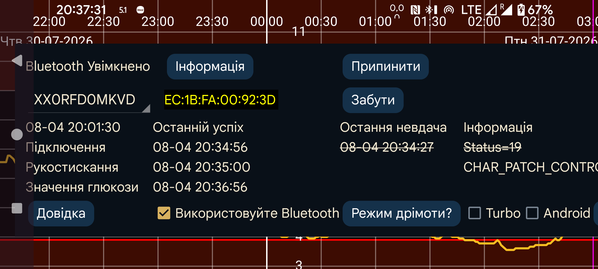

У списку показано назву датчика. Якщо Juggluco одночасно використовує кілька датчиків, можна вибрати, для якого показувати інформацію.
Режим дрімоти? відкриває екран із відомостями про вимкнення оптимізації батареї для Juggluco, яка може заважати роботі програми.
Історія потоків: у Libre 2 історичні значення — це минулі показники з інтервалом 15 хвилин. Раніше вони надходили лише під час сканування. Коли параметр увімкнено, історія також отримується через Bluetooth, а деякі інші функції працюють інакше. Juggluco надсилає до LibreView історичні значення замість середніх потокових. Недолік — повільніша робота, що може бути важливо на годинниках Wear OS. Параметр не впливає на Libre 3 і датчики Libre 2 для США/Канади/Австралії/Кореї: вони завжди передають історію через Bluetooth.
Помилка: параметр є лише у Wear OS для Libre 3. Його потрібно вмикати на Samsung Galaxy Watch 5 і новіших, доки Samsung не виправить помилку. Без нього значення надходять кожні 2 хвилини замість щохвилини. Samsung Galaxy Watch 5–Ultra завжди отримують значення Libre 2 з інтервалом дві хвилини.
⏰: дозволяє Juggluco використовувати функцію будильника для точного часу підключення до датчиків Dexcom G7 і ONE+. Без неї пристрій у глибокому сні іноді не прокидається для повторного з’єднання й не одразу отримує значення глюкози. На моєму годиннику Wear OS це траплялося серед ночі, імовірно через дуже малу рухливість. Через подальше дозавантаження й повільне пробудження я не бачив проблеми на годиннику чи телефоні — лише в журналах. Моєму телефону цей параметр не потрібен і з ним, здається, працює гірше.
Дозвіл: до Android 12 для пошуку Bluetooth-пристроїв був потрібен дозвіл на місцезнаходження. В Android 12 і новіших є дозвіл Пристрої поблизу , потрібний для будь-якої взаємодії з Bluetooth-пристроями.
Відома адреса пристроюпоказується після ідентифікатора датчика. Червоний колір означає датчик американського типу.
Забути: забути адресу пристрою й знову виконати її пошук. Для деяких датчиків це потрібно для підключення, і Juggluco робить це автоматично. Ця кнопка дає змогу запустити процедуру вручну, якщо вона потрібна й в іншій ситуації.
Припинити: припинити Bluetooth-з’єднання з цим датчиком. Щоб згодом знову отримувати потокові значення, достатньо відсканувати його або натиснути «Активувати» в інформації про датчик.
Роз’єднати: датчики Linx/Lumiflex/Aidex X пам’ятають телефон або годинник, з яким сполучені, і відмовляються підключатися до інших пристроїв. Кнопка надсилає датчику команду розірвання; після успішного виконання інші телефони чи годинники знову можуть підключитися. Якщо для перенесення датчика на годинник або з нього використовується ліве меню→Дивитися→Налаштування Wear OS→«Пряме з’єднання датчика…», розірвання виконується автоматично, тому цю кнопку натискати не слід.
Очистити: кнопка є лише для Linx/Lumiflex/Aidex X. Вона видаляє всі значення глюкози з датчика й перезапускає його як новий, даючи змогу використовувати довше за 15 днів. У моєму тесті значення після офіційного завершення були цілком непридатні — приблизно вдвічі нижчі за паралельний Libre 3. Після другого очищення через кілька тижнів вони знову стали значно гіршими, у моєму випадку дуже низькими. Схоже, проблема не в тривалішому використанні, а саме в очищенні.
Під час очищення багато разів запускається пошук Bluetooth-пристроїв. Android обмежує кількість таких сканувань за певний час, а зайві запити просто відкидає. Можна лише вимкнути й знову ввімкнути Bluetooth, щоб скинути лічильник.
Скинути: лише Sibionics 2. Натисніть під час заміни датчика в передавачі — коли Juggluco підключена до старого та/або нового датчика. Не натискайте, якщо передавач уже скинула інша програма.
Turbo: збільшує зусилля на зв’язок із датчиком, сподіваючись зменшити помилки підключення. Може витрачати більше батареї. Схоже, потрібно на Watch 4 з FreeStyle Libre 2, але не з Libre 3 і не на жодному з перевірених смартфонів.
Android: доручає Android, а не Juggluco, встановлювати з’єднання з датчиком. Не використовуйте! У більшості випадків підключення триватиме довше. Параметр додали як обхід помилки однієї версії Android 13, яку вже виправлено. Умикайте його лише тоді, коли на екрані датчика немає недавніх часових позначок: не показано помилок з’єднання або датчика, але й значення не надходять, а вимкнення та ввімкнення Bluetooth відновлює роботу. Такий стан може також виникати, якщо європейський Libre 2 одночасно підключено до двох програм на одному телефоні — це можливо лише для цього варіанта.
Інформація: показує час запуску й завершення датчика, а також останнього сканування та потоку.
Для підключення FreeStyle Libre 2 через Bluetooth Low Energy Bluetooth має бути ввімкнено. Нічого не відбудеться, доки датчик не буде успішно відскановано цією програмою. Датчик не повинен бути підключений до зчитувача FreeStyle або інших програм на смартфоні. Abbott LibreLink слід видалити, вимкнути або примусово зупинити. Якщо датчик запущено зчитувачем FreeStyle і його неможливо вимкнути, запобігти зв’язку з датчиком можна, помістивши зчитувач у клітку Фарадея.
Використовуйте Bluetooth має бути ввімкнено.
Навіть коли всі ці умови виконано, програма може довго не отримувати значення від датчика. Часто це займає хвилину, але іноді значно довше. Найбільше труднощів виникає на етапі підключення . Найчастіша помилка має status=133 — це аргумент status функції onConnectionStateChange(BluetoothGatt bluetoothGatt, int status, int newState). Він означає Bluetooth-пристрій не знайдено. Майже завжди потрібно лише трохи зачекати. Можливо також, що датчик підключений до іншого пристрою, тимчасово працює неправильно, є радіоперешкоди або Bluetooth Android не працює. Іноді допомагає вимкнути й увімкнути Bluetooth, перезапустити телефон або відключити Bluetooth інших пристроїв. Інші проблеми інколи усуває сканування датчика. Вода, зокрема вода в тілі, може заважати сигналу: годинник Wear OS на руці, протилежній датчику, може втрачати зв’язок, якщо тіло опиняється між годинником і датчиком.
Один користувач Accu-Chek SmartGuide повідомив, що коли пошук Bluetooth не знаходив датчик, допомогло відкрити «Підключені пристрої» в налаштуваннях Android, вибрати датчик і натиснути Забути.
Сканування датчика Libre в Juggluco на іншому телефоні з увімкненим Використовуйте Bluetooth перехоплює з’єднання в цього телефона. Щоб повернути його, може знадобитися час і кілька повторних сканувань.